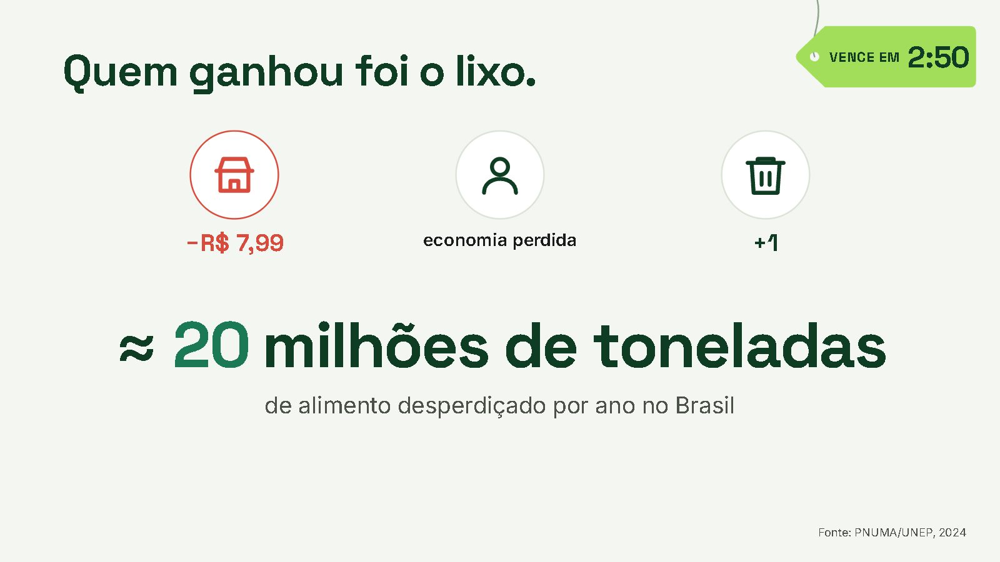
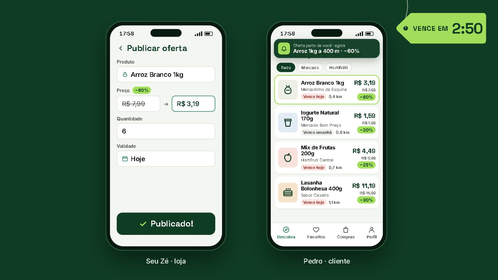
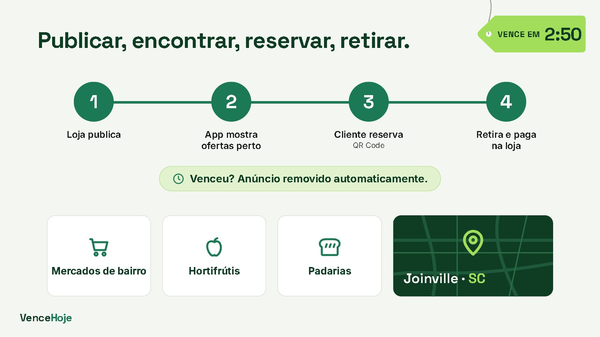
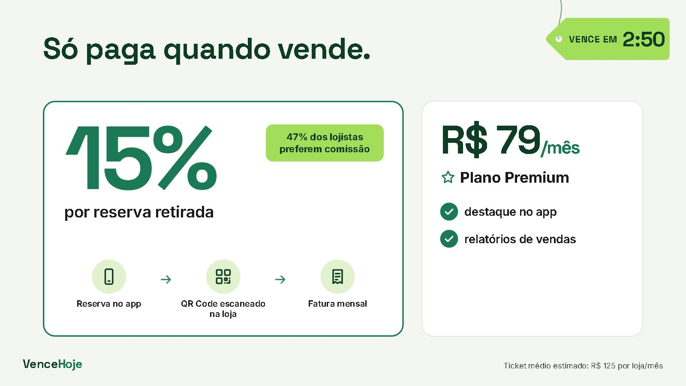
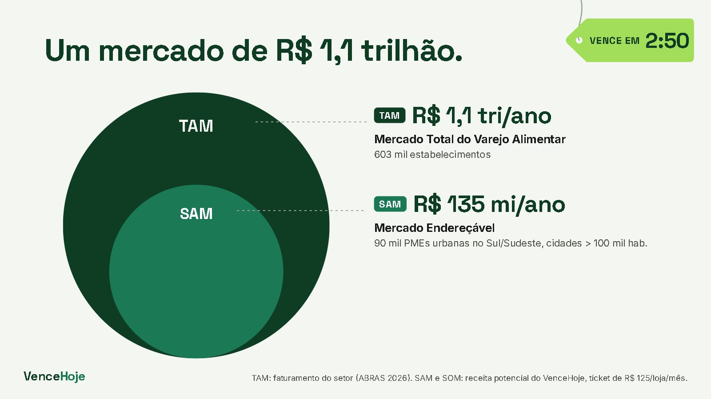
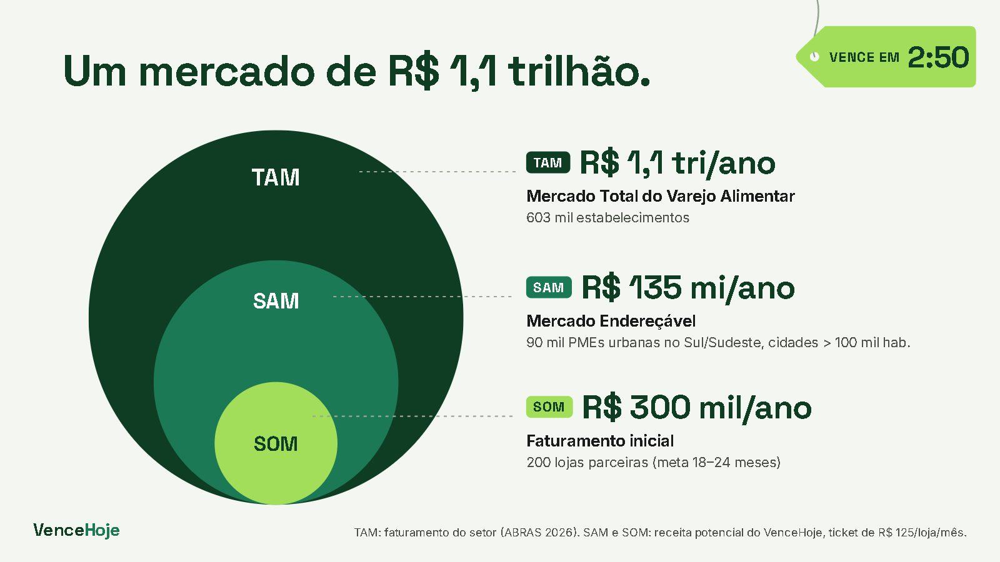

Antônio Budal · Nicolas Malheiros · Lucas Santos · João Penna · Felipe Miguel
2:50tempo-alvo (10 s de folga)
9 slidesS3, S8 e S9 têm cliques internos
5 pessoasencenação + apresentação
Linha do tempo
Bloco
Tempo
Duração
Quem fala
Slides
Etiqueta ao entrar
1. Problema (cena + narração)
0:00–0:35
35 s
Felipe abre · Nicolas, Antônio e João atuam · Felipe narra
S1 (0:00), S2 (0:20)
2:50 · 2:30
2. Solução + app + área
0:35–1:10
35 s
Só Felipe fala · os outros em mímica
S3 (0:35), S4 (0:58)
2:15 · 1:52
3. Pesquisa
1:10–1:35
25 s
João
S5
1:40
4. Benchmark
1:35–1:55
20 s
Lucas
S6
1:15
5. Fonte de receita
1:55–2:15
20 s
Nicolas
S7
0:55
6. TAM/SAM/SOM
2:15–2:35
20 s
Nicolas
S8
0:35
7. Conclusão
2:35–2:50
15 s
Felipe + todos
S9
0:15
Passagens de vez: Felipe → João (fim do S4, "O João foi perguntar") → Lucas (fim do S5, João vira para ele) → Nicolas (fim do S6, Lucas vira para ele) → Nicolas segue no S8 → Felipe (S9). O Lucas passa os slides o tempo todo, inclusive quando ele mesmo apresenta.
Papéis
Pessoa
Na cena
Apresenta
Falas na cena
Adereço
Felipe Miguel
Narrador
Problema (S2), Solução/App/Área (S3–S4) e Conclusão (S9)
abre a cena no S1, narra o S2 e todo o S3
—
Antônio Budal
A Lixeira
não apresenta slide
1 fala curta no S1, mímica no S3, reação no S9 e a frase final em coro
saco de lixo preto aberto nas mãos
Lucas Santos
Passa os slides
Benchmark (S6)
nenhuma; aperta T no início e dá todos os cliques
passador de slides
João Penna
Pedro, o cliente
Pesquisa (S5)
1 fala curta no S1, mímica no S3
celular
Nicolas Malheiros
Seu Zé, dono do mercadinho
Fonte de receita (S7) e TAM/SAM/SOM (S8)
1 fala curta no S1, mímica no S3
boné, pacote de arroz 1kg com etiqueta vermelha "VENCE HOJE", celular no bolso
Como passar os slides (Lucas)
Teclas
→EspaçoPageDown ou clique esquerdo: avança (inclusive os cliques internos)
←PageUp ou clique direito: volta
T inicia ou pausa a etiqueta · R zera a etiqueta
F tela cheia · Home volta ao S1
N abre a janela de notas (roteiro + próximo clique)
A etiqueta (contagem regressiva)
Começa em 2:50 e só corre depois de T, no início do S1.
Nos últimos 20 s fica vermelha e pulsa.
No S9 vai para o centro e se ajusta para 0:15, mesmo se vocês estiverem adiantados ou atrasados.
O clique final leva a 0:00 e carimba “VENCE HOJE”.
Antes de subir ao palco
Abra o index.html local (funciona sem internet). Reserva: pitch-vence-hoje.vercel.app
As animações rodam sempre, mesmo com as animações do Windows desligadas (movimento: "completo" no CONFIG).
Aperte F (tela cheia) e confira o S1 parado em 19:58.
Se usar notas, aperte N e arraste a janela para o notebook.
Teste o passador: ele deve mandar →/← ou PageDown/PageUp.
Adereços: boné do Nicolas, pacote de arroz 1kg com etiqueta vermelha “VENCE HOJE” e o celular dele no bolso; saco de lixo preto aberto para o Antônio; celular do João. Não precisa de balcão: a cena é de pé, na frente do telão.
Como ler este roteiro
Felipe quem fala[ação em cena]CLIQUE Lucas avança
Plano B · B1trecho que pode ser cortado: se o ensaio passar de 3:00, corte nesta ordem (B1 → B5).
Os prints mostram a tela em cada momento. A etiqueta aparece em 2:50 porque foi capturada parada; no pitch ela corre.
S1
Cena: Mercadinho da Esquina
Tempo0:00–0:20QuemFelipe abre · Nicolas, Antônio e João atuam · Lucas passaEtiqueta ao entrar2:50
[Lucas aperta T para iniciar a etiqueta. Os quatro já estão de pé na frente do telão: Nicolas segurando o arroz, Antônio ao lado com o saco de lixo preto aberto, João um pouco ao lado e Felipe à frente para apresentar.]
Felipe[apontando para cada um]: “Oito da noite no mercadinho da esquina: o Seu Zé, dono da loja… o lixo… e o Pedro, cliente do bairro.”
Nicolas (Seu Zé)[olha a validade e o relógio]: “Vence hoje e eu só vi agora, fechando! Não dá mais tempo de vender.” [solta o arroz dentro do saco do Antônio]
Antônio (Lixeira)[animado, segurando o saco]: “Valeu, Seu Zé! Mais um pro lixo!”
João (Pedro)[olha indignado para o saco de lixo]: “Pô, Seu Zé, comida boa no lixo?! Se eu soubesse com 60% de desconto, eu levava na hora!”
[0:20 — todos congelam. Felipe dá um passo à frente.]CLIQUE → S2
S2
Quem ganhou foi o lixo
Tempo0:20–0:35QuemFelipeEtiqueta ao entrar2:30

Felipe: “Repararam? O arroz estava ótimo. Plano B · B1 (−4 s)O Seu Zé perdeu dinheiro, o Pedro perdeu 60% de desconto… e quem ganhou foi o lixo.” [Antônio acena, orgulhoso]
Felipe: “E o Brasil joga fora cerca de 20 milhões de toneladas de comida por ano.”
Tempo0:35–0:58QuemSó Felipe fala · Nicolas, João e Antônio em mímicaEtiqueta ao entrar2:15
Ao entrar
[No rebobinar, Antônio devolve o arroz do saco para o Nicolas e os três voltam às posições, em silêncio. Daqui até o fim do S3, só o Felipe fala.]
Felipe: “Olha como muda: o Seu Zé vê que vence hoje e publica com 60% de desconto em segundos.” [Nicolas digita no celular]CLIQUE 1(“Publicado!” + notificação no celular do Pedro)

Depois do clique 1
Felipe: “Na hora, o alerta chega no celular do Pedro: de 7,99 por 3,19. Ele reserva com um toque.” [João olha o celular e sorri]CLIQUE 2(tela de reserva com QR Code)
Depois do clique 2
Felipe: “Passa no mercadinho, paga no balcão… e o lixo fica sem nada.” [João mostra o celular, Nicolas entrega o arroz. Antônio olha o saco vazio e sai de lado, desolado.]CLIQUE 3(marca VenceHoje)
Depois do clique 3
Felipe: “Isso é o VenceHoje. Venceu? O anúncio sai sozinho.” CLIQUE → S4
S4
Como funciona + área
Tempo0:58–1:10QuemFelipeEtiqueta ao entrar1:52

Felipe: “A gente começa por Joinville: mercados de bairro, hortifrútis e padarias. Mas será que as pessoas querem isso? O João foi perguntar.” CLIQUE → S5
S5
A gente perguntou
Tempo1:10–1:35QuemJoãoEtiqueta ao entrar1:40
João[saindo do personagem]: “A gente foi perguntar. Entre os lojistas, 80% perdem 300 reais ou mais por mês com produto vencendoPlano B · B2 (−3 s), e 67% pagariam por uma solução.”
João: “Entre os consumidores, 73% já compraram por desconto de validade. E 53% nunca viram nada parecido.”
João[vira para o Lucas]: “Mas ninguém faz isso?” CLIQUE → S6
S6
Benchmark
Tempo1:35–1:55QuemLucasEtiqueta ao entrar1:15
Lucas: “Faz, mas diferente. A Food To Save vende sacola surpresa.Plano B · B4 (−2 s) Você paga sem saber o que vem.”
Lucas: “E 76% dos lojistas ainda usam plaquinha no balcão. No VenceHoje, você vê produto, preço e validade antes de sair de casa.”
Lucas[vira para o Nicolas]: “E como isso dá dinheiro?” CLIQUE → S7
S7
Fonte de receita
Tempo1:55–2:15QuemNicolasEtiqueta ao entrar0:55

Nicolas: “Quase metade dos lojistas pediu comissão: o lojista só paga quando vende.”
Nicolas: “O cliente paga no balcão, o lojista escaneia o QR Code e o VenceHoje fica com 15%, numa fatura mensal.Plano B · B3 (−5 s) Quem quer destaque e relatórios assina o Premium, por 79 reais por mês.”
Nicolas: “E o tamanho desse mercado?” CLIQUE → S8(Nicolas continua)
S8
TAM / SAM / SOM
Tempo2:15–2:35QuemNicolasEtiqueta ao entrar0:35
Ao entrar
Nicolas: “O varejo de alimentos movimenta 1,1 trilhão de reais por ano no Brasil.” CLIQUE 1 · SAM

Depois do clique 1
Nicolas: “Nosso alvo: 90 mil pequenos negócios no Sul e no Sudeste, 135 milhões por ano.” CLIQUE 2 · SOM

Depois do clique 2
Nicolas: “Em dois anos, a meta é chegar a 200 lojas parceiras: 300 mil reais por ano.” CLIQUE → S9
S9
Fechamento
Tempo2:35–2:50QuemFelipe + todosEtiqueta ao entrar0:15
Ao entrar
[A etiqueta vai ao centro, ajustada para 0:15. Os cinco se alinham lado a lado.]
Felipe: Plano B · B5 (−6 s)“Todo dia, comida boa vai pro lixo às oito da noite. Com o VenceHoje, o Seu Zé ganha, o Pedro economiza e o lixo passa fome.”[Antônio faz cara de choro]
Felipe[olhando para a banca]: “Banca, comida tem prazo de validade. Essa oportunidade também.” CLIQUE FINAL(Lucas: a etiqueta vai a 0:00 e carimba “VENCE HOJE”)
Depois do clique 1
TODOS[apontando para a banca]: “E ela vence hoje!”
Plano B de tempo (se passar de 3:00)
B1 · S2: tirar "O Seu Zé perdeu dinheiro, o Pedro perdeu 60% de desconto…" e ir direto para "e quem ganhou foi o lixo" (−4 s).
B2 · S5: tirar "e 67% pagariam por uma solução"; o número continua no slide (−3 s).
B3 · S7: tirar a frase do Premium; ele continua no slide (−5 s).
B4 · S6: tirar "Você paga sem saber o que vem" (−2 s).
B5 · S9: tirar a primeira frase do Felipe e ir direto para "Banca, comida tem prazo de validade…" (−6 s). O Antônio faz a cara de choro mesmo assim.
Números para ter na ponta da língua
≈ 20 mi t/anoalimento desperdiçado no Brasil (PNUMA/UNEP, 2024)
R$ 1,1 tri/anoTAM · 603 mil estabelecimentos
R$ 135 mi/anoSAM · 90 mil PMEs urbanas no Sul/Sudeste, cidades > 100 mil hab.
15%comissão por reserva retirada, em fatura mensal
R$ 79/mêsPlano Premium: destaque no app + relatórios de vendas
R$ 125ticket médio por loja/mês = R$ 135 mi ÷ 90 mil ÷ 12
200 × 125 × 12= R$ 300 mil/ano (conta do SOM)
Joinvilleárea inicial: mercados de bairro, hortifrútis, padarias
Pesquisa · lojistas: 80% perdem R$ 300 ou mais por mês · 67% pagariam por uma solução · 73% têm até 10 min por dia. Consumidores: 73% já compraram por desconto de validade · 82% decidem pelo preço · 53% nunca viram algo parecido. Não citar o número de entrevistados.
Perguntas prováveis da banca
Pergunta
Resposta em uma frase
"Se o pagamento é na loja, como vocês garantem a comissão?"
Cada reserva gera um QR Code; o lojista escaneia na retirada, o que confirma a venda e baixa o estoque, e no fim do mês recebe uma fatura (Pix ou boleto) só das retiradas confirmadas.
"E se o lojista não escanear o QR para não pagar?"
A reserva fica pendente: o estoque do app não baixa, a loja não recebe a avaliação do cliente e reservas sem confirmação geram alerta para a nossa equipe.
"Por que 15%?"
O lojista fica com 85% de uma venda que iria para o lixo, e a comissão é cobrada só quando ele vende, que é o que 47% dos lojistas pediram.
"E se o cliente passar mal? A imagem da loja não fica queimada?"
60% dos lojistas tiveram esse medo; por isso a validade fica sempre visível e o anúncio sai sozinho quando vence.
"O lojista vai ter tempo pra isso?"
73% têm até 10 minutos por dia, e publicar uma oferta leva segundos.
"Qual desconto faz o cliente ir até a loja?"
60% só vão com 30% ou mais e 67% andam até 10 minutos; o app prioriza ofertas próximas e com bom desconto.
"Por que não sacola surpresa, como a Food To Save?"
47% dos consumidores se preocupam com a qualidade; ver o produto exato e a validade passa mais confiança.
"E o SaveFood, que é parecido?"
Está em fase beta; nosso foco é o comércio de bairro, com publicação em segundos, reserva sem pagamento no app e remoção automática no vencimento como padrão.
"Como chegaram em R$ 300 mil no SOM?"
200 lojas × ticket médio de R$ 125/mês × 12 meses; o ticket é o mesmo do SAM (R$ 135 mi ÷ 90 mil lojas).
TAM é o faturamento do setor; SAM e SOM são receita potencial do VenceHoje (o rodapé do S8 deixa isso explícito).